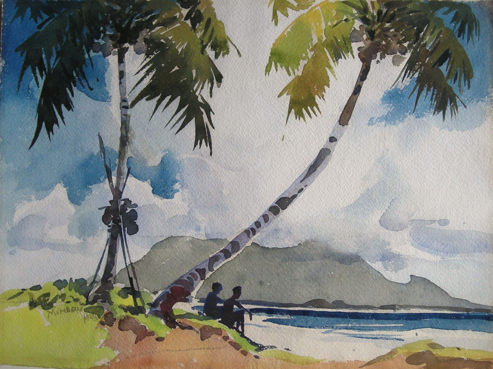

Yong Mun Sen
1896 – 1962
Artist Biography
Born Yong Yen Lan in Kuching, Sarawak, Yong Mun Sen (who changed his name in 1922) initially studied calligraphy and brush art in China. He returned to Sarawak in 1917 but from 1920 was based in Penang. In 1936 he set up his own gallery and in 1937 he became President of the newly-formed Penang Chinese Art Club. Japanese occupation of Malaya halted his artistic activities but post-war Sen flourished; exhibitions in Singapore and Malaya and the patronage of foreign clients led to his becoming known by some as the Father of Malaysian Painting. At the very least he was one of the key pioneers of Malaysian modern art. Yong Mun Sen’s masterly control of watercolour, rather than his oils and brush paintings, accounted for his fame. His uncomplicated landscapes were executed in fluid, full-blood washes with a flowing rhythm consciously marrying Chinese art with that of the West. The first of several strokes in 1956 affected his painting and continued illness and financial hardship led to profound despair before Sen’s death in 1962. Ten years later, in 1972, the National Art Gallery of Malaysia organised a Mun Sen memorial exhibition, cementing his place in Malaysia’s art history. The Mun Sen gallery was resurrected in 2003 by a relative. His works also continue to be shown in mixed exhibitions in Kuala Lumpur, notably Valentine Wille’s 2007 exhibition on Malaysian Pioneer artists and Galerie Petronas September 2009 exhibition ‘Changing Phases’.

Kedah Peak, from Penang, 1946